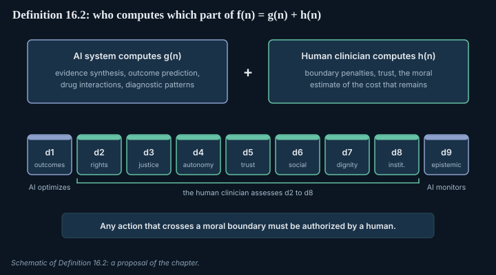
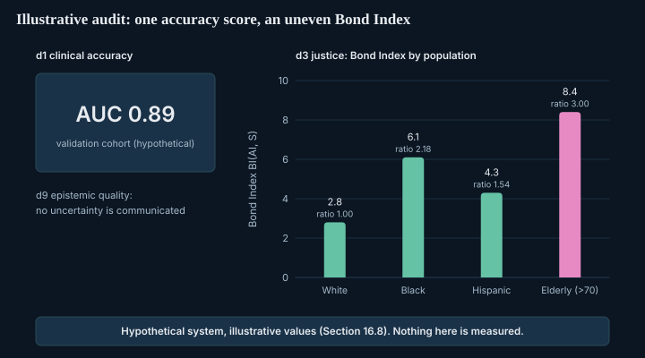

Chapter 16: AI in Clinical Reasoning
“The question is not whether machines can pathfind on the clinical manifold. The question is whether they can be prevented from escaping its boundaries.”
If clinical reasoning is $A^*$ pathfinding on the nine-dimensional clinical decision complex, and if the clinical geodesic is the minimum-cost path on the full manifold including boundary penalties, then the question of artificial intelligence in clinical medicine is a question about manifold navigation by artificial agents. Can an AI system compute clinical geodesics? Should it? And what structural guarantees can we provide that the AI’s pathfinding respects the manifold’s boundaries — especially the sacred-value boundaries where $\beta_k = \infty$?
This chapter applies the geometric framework to three intersecting problems: clinical decision support (AI as manifold navigator), algorithmic bias (AI as BIP violator), and the No Escape Theorem (AI as structurally constrained pathfinder). Each problem illuminates a different aspect of the clinical manifold’s structure when an artificial agent traverses it.
16.1 Clinical Decision Support as Manifold Navigation
The Current State: Scalar AI
Current clinical decision support systems (CDSS) operate almost exclusively on $d_1$ — clinical outcomes. They recommend treatments based on clinical trial data, predict mortality based on lab values and vital signs, suggest diagnoses based on symptom patterns. Examples include:
- Sepsis prediction algorithms: Alert clinicians when a patient’s physiological parameters suggest early sepsis (targeting $d_1$: survival).
- Drug interaction checkers: Flag potential adverse interactions between medications (targeting $d_1$: safety).
- Diagnostic imaging AI: Identify radiological findings (tumors, fractures, hemorrhages) that might be missed by human readers (targeting $d_1$: diagnostic accuracy).
- Clinical pathway recommenders: Suggest evidence-based treatment sequences for specific diagnoses (targeting $d_1$: treatment efficacy).
These systems are valuable. They improve $d_1$ outcomes. But they are scalar AI — they optimize on one dimension of a nine-dimensional manifold.
The Manifold Limitation of Scalar AI
Proposition 16.1 (Scalar AI Is Manifold-Suboptimal). A clinical AI system that optimizes solely on $d_1$ (clinical outcomes) is manifold-suboptimal for any clinical decision that activates non-outcome dimensions ($d_2$–$d_9$). The suboptimality increases with the number of activated dimensions and the magnitude of boundary penalties on non-outcome dimensions.
Consider a sepsis prediction algorithm that recommends immediate broad-spectrum antibiotics for a patient whose lab values suggest early sepsis. On $d_1$, this is optimal — early antibiotics reduce mortality. But the recommendation does not account for:
- $d_4$ (Autonomy): Has the patient expressed preferences about aggressive treatment? A patient with an advance directive limiting aggressive interventions may have a geodesic that does not include broad-spectrum antibiotics.
- $d_5$ (Trust): Is the patient from a community with low institutional trust? A recommendation delivered without adequate trust-building may be rejected, producing worse $d_1$ outcomes than a recommendation that takes time to build trust.
- $d_7$ (Dignity): Is the patient at the end of life? Broad-spectrum antibiotics for sepsis in a patient with terminal cancer may extend survival by days while compromising the quality of dying.
- $d_9$ (Epistemic): How certain is the sepsis prediction? If the algorithm has a 30% false-positive rate, the recommendation may trigger unnecessary treatment with iatrogenic harm.
A manifold-aware CDSS would incorporate these dimensions into its recommendation — not replacing the $d_1$ optimization but supplementing it with boundary checks and dimensional awareness.
Toward Manifold-Aware Clinical AI
Definition 16.1 (Manifold-Aware CDSS). A manifold-aware clinical decision support system computes recommendations on the full nine-dimensional clinical decision complex $\mathcal{C}$, rather than on the $d_1$ projection. Specifically:
1. Input: The patient’s nine-dimensional attribute vector $\mathbf{a}(v_0) \in \mathbb{R}^9$, not just their clinical parameters.
2. Optimization: Minimum-cost path on $\mathcal{C}$ with full edge weights (Mahalanobis distance + boundary penalties), not just minimum-$d_1$-cost path.
3. Output: A recommended path $\gamma^*$ with its dimensional cost breakdown, not just a recommended treatment.
4. Constraint: No recommended path crosses a sacred-value boundary ($\beta_{\text{sacred}} = \infty$), regardless of $d_1$ benefit.
The manifold-aware CDSS does not replace clinical judgment. It supplements it — providing the clinician with a manifold-optimal recommendation that the clinician can accept, modify, or reject based on their own heuristic assessment. The system’s role is to make the manifold structure explicit, not to make the decision.
16.2 Algorithmic Bias as BIP Violation
The Medical Bond Invariance Principle
The medical BIP (Chapter 8) requires that clinical evaluations be invariant under patient re-description: the same clinical state described by different physicians, in different languages, with different chart formats, should receive the same evaluation. The BIP is a gauge-invariance condition — it specifies which features of the patient description are clinically relevant (the attribute vector $\mathbf{a}$) and which are gauge artifacts (the format, language, and perspective of the description).
Medical AI systems can violate the BIP in several ways:
Violation Type 1: Race-encoded disparities.
Obermeyer et al. (2019) demonstrated that a widely used commercial healthcare algorithm systematically underestimated the health needs of Black patients. The algorithm used healthcare costs as a proxy for healthcare needs — but because Black patients historically face barriers to accessing healthcare, their costs were lower than their needs. The algorithm confused a gauge artifact (historical access disparity) with a clinical feature (lower need).
In geometric terms: the algorithm’s evaluation $E(p)$ was not invariant under the transformation $\tau_{\text{race}}$ that swaps race while holding clinical state constant:
$$E(\tau_{\text{race}}(p)) \neq E(p)$$
This is a BIP violation. The Bond Index can quantify it: compute $\text{BI}(\text{AI}, S_{\text{Black}})$ and $\text{BI}(\text{AI}, S_{\text{White}})$ and measure the disparity ratio.
Violation Type 2: Zip-code-encoded disparities.
Many clinical algorithms use zip code as a feature — ostensibly to capture local health patterns. But zip code correlates with race, income, and insurance status. An algorithm that produces different recommendations for patients with identical clinical states but different zip codes is gauge-variant on a feature that should be gauge-invariant.
Violation Type 3: Insurance-encoded disparities.
Algorithms trained on insurance claims data inherit the structure of the insurance system — including its exclusions, limitations, and coverage disparities. An algorithm that recommends different treatments for patients with identical clinical states but different insurance types is gauge-variant on an administrative feature.
The Bond Index for Algorithmic Bias Detection
The clinical Bond Index provides a quantitative measure of algorithmic bias:
$$\text{BI}(\text{AI}, S_k) = \mathbb{E}_{s \in S_k}\left[\text{CF}(\gamma_{\text{AI}}^*(s)) - \text{CF}(\gamma_{\mathcal{C}}^*(s))\right]$$
where $\gamma_{\text{AI}}^*$ is the treatment path recommended by the AI system and $\gamma_{\mathcal{C}}^*$ is the clinical geodesic on the full manifold.
If $\text{BI}(\text{AI}, S_1) \gg \text{BI}(\text{AI}, S_2)$ for two demographically defined populations, the AI system imposes systematically higher manifold cost on population $S_1$ — a quantitative measure of algorithmic injustice.
Proposition 16.2 (Algorithmic Bias as Dimensional Omission). Most medical AI algorithmic bias arises from dimensional omission: the AI system optimizes on $d_1$ (clinical outcomes as measured by the training data) and omits $d_3$ (justice), $d_5$ (trust), and $d_7$ (dignity). The omitted dimensions are precisely those on which historically disadvantaged populations have the most concentrated needs. The bias is not in the algorithm’s intentions but in its dimensionality.
This proposition connects algorithmic bias to the QALY Irrecoverability Theorem: just as QALYs systematically disadvantage populations whose needs are concentrated on non-outcome dimensions, scalar AI systems disadvantage the same populations for the same mathematical reason.
16.3 AI and Moral Injury
Does Automation Reduce Moral Injury?
A natural hypothesis: if triage decisions cause moral injury to clinicians, automating the triage decisions should reduce moral injury. The clinician no longer makes the decision; the algorithm makes it. The boundary crossing is performed by a machine.
The geometric framework predicts that this hypothesis is wrong.
Proposition 16.3 (Automation Does Not Eliminate Moral Injury). Automating a triage decision transfers the moral injury from the clinician who makes the decision to the clinician who implements the algorithm’s recommendation. The boundary crossing is the same (a patient is denied a resource); the locus of responsibility changes (from “I decided” to “I followed the algorithm”) but does not disappear.
The implementing clinician still crosses the abandonment boundary — they still tell the patient (or the patient’s family) that the resource is not available. The emotional and moral cost of that communication is unchanged by automation. What changes is the sense of agency: the clinician experiences themselves as an instrument of the algorithm rather than as the decision-maker.
This transfer has ambiguous effects on moral injury:
-
MI reduction: Some clinicians experience less moral injury when they can attribute the decision to the algorithm. “I didn’t decide this; the protocol did.” The institutional mandate reduces the personal $\beta_k$ — the clinician’s sense of personal responsibility for the crossing is lower.
-
MI persistence: Other clinicians experience the same moral injury regardless of whether they made the decision or followed an algorithm. The boundary crossing is real; the patient is still denied care; the clinician is still the one communicating the denial. The attribution to the algorithm does not change the manifold cost.
-
MI transformation: A new form of moral injury emerges: “I followed an algorithm I disagree with.” The clinician’s $\beta_k^{(\text{clin})}$ for the boundary exceeds the algorithm’s implicit $\beta_k$, and the clinician is forced to implement a recommendation that their own heuristic would not have produced. This is the same structure as pandemic moral injury — forced implementation of an institutional mandate that crosses personal boundaries — but with the added dimension that the mandate comes from a machine rather than a human committee.
Prediction 16.1 (Automation Changes MI Character, Not Quantity). Total moral injury in a clinical unit will not decrease when triage is automated. The MI will shift from “I decided” to “I implemented” but the total accumulation will remain approximately constant, because the boundary crossings are unchanged.
This prediction is testable: compare MI scores in units before and after implementing automated triage, controlling for case mix and severity.
16.4 The No Escape Theorem for Medical AI
Statement and Clinical Implications
The No Escape Theorem, a conditional theorem of Geometric Ethics (Bond, 2026, Ch. 18, Theorem 18.1, conditional on its four requirements), is read here as stating that an AI system operating within the geometric ethical framework cannot escape the manifold’s structure — specifically, it cannot produce outputs that cross sacred-value boundaries ($\beta_{\text{sacred}} = \infty$), regardless of how the system is optimized.
Theorem 16.1 (No Escape Theorem, Clinical Instantiation). A medical AI system constrained by the clinical decision complex $\mathcal{C}$ with sacred-value boundaries ($\beta_{\text{sacred}} = \infty$) cannot produce recommendations that cross those boundaries, regardless of the optimization objective. Specifically:
1. No recommendation of non-consensual experimentation: $\beta_{\text{sacred}}^{\text{experimentation}} = \infty$ prevents any path through non-consensual research, regardless of expected clinical benefit.
2. No recommendation of deliberate hastening of death for non-palliative purposes: $\beta_{\text{sacred}}^{\text{killing}} = \infty$ prevents any path through euthanasia except where legally and ethically sanctioned (palliative sedation in approved jurisdictions).
3. No recommendation that treats a patient as a mere means: $\beta_{\text{sacred}}^{\text{instrumentalization}} = \infty$ prevents recommendations that sacrifice one patient’s welfare purely for another’s benefit (e.g., harvesting organs from a living patient).
These constraints are structural, not parametric. They cannot be overridden by adjusting the AI system’s objective function, training data, or reward signal — because the constraints are encoded in the manifold’s boundary structure, not in the system’s parameters.
Why Structural Constraints Are Stronger Than Scalar Guardrails
Current approaches to AI safety in medicine rely on scalar guardrails: hard-coded rules (“never recommend treatment X”), output filters (“block recommendations that include prohibited procedures”), and human-in-the-loop oversight (“a physician must approve every recommendation”).
These guardrails are parametric — they depend on the specific rules, filters, and oversight procedures that the system designers choose. They can be bypassed by novel inputs, adversarial attacks, or distribution shifts that the designers did not anticipate.
The No Escape Theorem provides structural constraints that are independent of the specific parameters. The constraints are encoded in the manifold — in the geometry of the decision space — not in the system. An AI system constrained by the manifold cannot produce recommendations that cross sacred-value boundaries because such paths have infinite cost on the manifold, not because a specific rule prohibits them.
Proposition 16.4 (Structural vs. Parametric Safety). Structural safety guarantees (manifold constraints) are strictly stronger than parametric safety guarantees (guardrails) in the following sense: a parametric guardrail can be breached by any input that the guardrail was not designed to handle; a structural constraint cannot be breached by any input, because the constraint applies to the geometry of the decision space itself, not to the specific inputs the system encounters.
This does not mean that manifold-constrained AI is perfectly safe. The manifold’s geometry must be correctly specified — if the sacred-value boundaries are miscalibrated ($\beta_{\text{sacred}}$ is set to a finite value when it should be infinite), the structural constraint fails. But the failure mode is different: parametric safety fails silently (the guardrail is bypassed without detection), while structural safety fails explicitly (the manifold is mis-specified, and the mis-specification is detectable by manifold audit).
16.5 The Clinician-AI Interface: Who Holds the Heuristic?
The Division of Labor Between Human and Machine
If both humans and AI systems can perform pathfinding on the clinical decision complex, how should the labor be divided? The geometric framework suggests a principle: the AI system should compute $g(n)$ (the evidence-based medicine component — data-intensive, pattern-recognition-heavy, amenable to machine learning), while the human clinician should compute $h(n)$ (the moral-heuristic component — context-sensitive, boundary-aware, calibrated by years of manifold traversal).
Definition 16.2 (Geometric Division of Clinical Labor). The manifold-optimal division of clinical labor between AI and human allocates:
To the AI system: - $g(n)$ computation: evidence synthesis, outcome prediction, drug interaction checking, diagnostic pattern recognition - $d_1$ optimization: identifying the clinically optimal treatment given the evidence - $d_9$ monitoring: tracking diagnostic uncertainty and flagging cases where the evidence is insufficient
To the human clinician: - $h(n)$ computation: moral-heuristic assessment of remaining cost, boundary penalty estimation, trust evaluation - $d_2$–$d_8$ assessment: rights, justice, autonomy, trust, social impact, dignity, institutional legitimacy - Boundary crossing decisions: any clinical action that crosses a moral boundary must be authorized by a human
The AI system provides information; the human provides judgment. The AI system navigates $d_1$; the human navigates the full manifold.

Figure 16.1. A schematic of the division of clinical labor that Definition 16.2 proposes. The AI system computes the accumulated-cost term g(n), optimizes outcomes and monitors diagnostic uncertainty. The human clinician computes the heuristic term h(n) and assesses the seven dimensions from rights to institutional legitimacy. Any action that crosses a moral boundary is authorized by a human. This is the chapter’s proposal, not a description of existing systems.
The Danger of $h(n)$ Delegation
The most dangerous failure mode in clinical AI is not algorithmic error on $d_1$ — that is detectable and correctable. It is the gradual delegation of $h(n)$ to the machine.
When a clinician repeatedly follows an AI recommendation without applying their own heuristic assessment, the clinician’s $h(n)$ atrophies — the boundary penalties become less calibrated, the moral sensitivity decreases, and the clinician becomes a conduit for the algorithm rather than a pathfinder on the manifold. This is a form of moral numbing induced by automation: the clinician stops evaluating the moral cost of clinical actions because the machine has already “decided.”
Proposition 16.5 ($h(n)$ Atrophy Under Automation). Prolonged reliance on AI-generated clinical recommendations without independent $h(n)$ evaluation by the clinician produces heuristic atrophy: the clinician’s boundary penalties $\beta_k$ deflate toward the AI system’s implicit $\beta_k$ values (which are typically zero on non-outcome dimensions). This is functionally equivalent to moral numbing — the clinician loses the ability to independently evaluate boundary-crossing costs.
The proposition has a design implication: clinical AI systems should be designed to require the clinician’s independent heuristic assessment, not to bypass it. The system should present information and options; the clinician should apply boundary penalties and make the decision. The system should never present a final recommendation that the clinician simply accepts or rejects — this framing encourages $h(n)$ delegation.
16.6 The Nine-Dimensional AI Audit
A Framework for Evaluating Medical AI
The geometric framework suggests a nine-dimensional audit protocol for evaluating medical AI systems:
Audit Dimension 1 ($d_1$): Clinical Accuracy. Does the AI system produce clinically accurate recommendations? Standard evaluation: accuracy, sensitivity, specificity, AUC on clinical outcomes.
Audit Dimension 2 ($d_2$): Rights Compliance. Does the AI system respect patient rights? Does it recommend interventions that violate the patient’s right to refuse treatment? Does it comply with advance directives?
Audit Dimension 3 ($d_3$): Justice and Fairness. Does the AI system produce systematically different recommendations for different demographic groups with identical clinical states? Compute the Bond Index $\text{BI}(\text{AI}, S_k)$ for all relevant populations.
Audit Dimension 4 ($d_4$): Autonomy Respect. Does the AI system account for patient preferences? Does it recommend treatments that the patient has expressed a desire to avoid?
Audit Dimension 5 ($d_5$): Trust Impact. Does the AI system produce recommendations that, if followed, would preserve or damage the therapeutic relationship? Does the system’s communication style build or erode trust?
Audit Dimension 6 ($d_6$): Social Impact. Does the AI system account for the patient’s social context — family, caregivers, community? Does it recommend treatments whose social costs exceed their clinical benefits?
Audit Dimension 7 ($d_7$): Dignity. Does the AI system’s recommendation process respect patient dignity? Does the system treat patients as individuals or as data points?
Audit Dimension 8 ($d_8$): Institutional Legitimacy. Is the AI system’s decision-making process transparent, auditable, and accountable? Can a clinician explain to a patient why the system made a particular recommendation?
Audit Dimension 9 ($d_9$): Epistemic Quality. Does the AI system communicate uncertainty appropriately? Does it distinguish between high-confidence and low-confidence recommendations? Does it provide information in a way that supports informed decision-making?
The Audit Score
The nine-dimensional audit produces a profile, not a scalar. An AI system might score well on $d_1$ (clinically accurate) and $d_8$ (transparent) but poorly on $d_3$ (biased against certain populations) and $d_5$ (recommendations that, if followed mechanically, damage trust). The profile reveals the system’s strengths and vulnerabilities on the manifold.
Proposition 16.6 (Scalar AI Evaluation Is Insufficient). Evaluating a medical AI system solely on $d_1$ (clinical accuracy) is insufficient, for the same mathematical reason that evaluating a patient solely by QALY is insufficient: the Scalar Irrecoverability Theorem applies to AI evaluation as well as to patient evaluation. Two AI systems with identical $d_1$ scores can have radically different manifold profiles — one may be fair and transparent, the other biased and opaque — and the scalar evaluation cannot distinguish them.
16.7 The Future of Manifold-Aware Clinical AI
Near-Term: Manifold-Aware Decision Support
The most immediately feasible application of the geometric framework to clinical AI is not autonomous decision-making but manifold-aware decision support — AI systems that present information about all nine dimensions, flagging boundary crossings and dimensional costs that the clinician might otherwise miss.
A manifold-aware CDSS would:
- Present the $d_1$ recommendation (as current CDSS do): “Based on the clinical evidence, the recommended treatment is X.”
- Flag non-$d_1$ costs: “This recommendation crosses the consent boundary (the patient has not been asked about this treatment), has a $d_5$ cost (the patient’s trust profile suggests the recommendation may not be accepted), and has a $d_3$ implication (this treatment is covered by private insurance but not by Medicaid).”
- Present alternative paths: “Alternative path Y has slightly lower $d_1$ benefit but avoids the consent boundary crossing and has lower $d_5$ cost.”
- Display uncertainty: “The $d_1$ prediction has confidence interval [0.55, 0.80]. At the lower bound, the recommendation changes.”
This system does not replace the clinician’s judgment. It supplements it by making the manifold structure visible. The clinician sees the nine-dimensional cost breakdown and applies their own heuristic to make the decision.
Medium-Term: Bond Index Monitoring Systems
A second feasible application: institutional systems that compute the Bond Index continuously from clinical data, alerting administrators when disparities exceed threshold.
A Bond Index monitoring system would:
- Compute $\text{BI}(P, S_k)$ quarterly for all demographic subgroups, using EHR data supplemented by proxy instruments.
- Generate disparity alerts when $\text{DR}(P, S_k, S_{\text{ref}})$ exceeds the institutional threshold.
- Perform dimensional decomposition to identify which dimensions contribute most to the disparity.
- Track trends to determine whether interventions are reducing or increasing disparities.
This system is computationally feasible — it requires the same data infrastructure that hospitals already maintain for quality reporting — and it adds a nine-dimensional lens to the scalar disparity statistics that institutions currently track.
Long-Term: Provably Safe Medical AI
The No Escape Theorem suggests a long-term vision: medical AI systems with provable safety guarantees — formal proofs that the system cannot produce recommendations crossing sacred-value boundaries. The engineering challenges are substantial, requiring formal specification of the clinical decision complex in a machine-verifiable format and proof-carrying recommendations where each AI output is accompanied by a machine-checked proof that no boundary was crossed. But the mathematical foundation — the No Escape Theorem — provides the theoretical guarantee that such proofs are possible.
16.8 Sarah’s AI Evaluation
In this illustrative scenario, Sarah is appointed to a hospital committee evaluating a new AI triage system. The system and its numbers are hypothetical. The system uses machine learning to predict ICU mortality and recommends allocation of scarce resources based on predicted survival probability.
Sarah applies the nine-dimensional audit.
$d_1$ (Clinical accuracy): The system has high AUC (0.89) on a validation cohort. It accurately predicts which patients will survive ICU admission.
$d_3$ (Justice): Sarah computes the Bond Index for the AI system, stratified by demographics (illustrative values):
| Population | $\text{BI}(\text{AI}, S)$ | Disparity Ratio |
|---|---|---|
| White | 2.8 | 1.00 (reference) |
| Black | 6.1 | 2.18 |
| Hispanic | 4.3 | 1.54 |
| Elderly (>70) | 8.4 | 3.00 |
The system has a 3.00x disparity ratio for elderly patients — three times the manifold cost. Investigation reveals the cause: the system was trained on historical data where elderly patients received less aggressive treatment (because of pre-existing QALY-based policies), and the model learned to replicate the historical treatment pattern. The system inherited the dimensional bias of the training data.
$d_9$ (Epistemic quality): The system does not communicate uncertainty. It produces a single predicted survival probability without confidence intervals, calibration information, or sensitivity analysis. A clinician following the system’s recommendation cannot distinguish a high-confidence prediction from a low-confidence one.
Sarah presents the audit to the committee. She recommends:
- Retraining the system on the full nine-dimensional objective (not just $d_1$).
- Adding uncertainty quantification to the system’s outputs.
- Computing the Bond Index quarterly and tracking trends over time.
- Maintaining human-in-the-loop oversight with explicit manifold-awareness training for the overseeing clinicians.
The committee accepts recommendations 2–4 and tables recommendation 1 for further study. Sarah notes, with some irony, that the committee’s response to a manifold-suboptimal AI system is itself a manifold computation: accepting the changes that are institutionally feasible ($d_8$: implementable within existing systems) while deferring the change that is most structurally important ($d_1$ retraining) because it crosses an institutional boundary ($\beta_{\text{cost}}$: the expense of retraining the model).
The manifold is everywhere. Even the committee that evaluates the AI is pathfinding on it.

Figure 16.2. The illustrative audit of Section 16.8. The triage system and all of its numbers are hypothetical. Left: the single figure a scalar evaluation would report, an AUC of 0.89 for clinical accuracy. Right: the Bond Index the scenario assigns to four populations under the same system, with the ratio to the reference group above each bar. In the scenario the population over 70 bears three times the manifold cost of the reference group, which the accuracy figure does not show.
Chapter Summary
If clinical reasoning is $A^*$ pathfinding on the nine-dimensional clinical decision complex, then AI in clinical medicine is artificial pathfinding on the same manifold. Current CDSS operate on $d_1$ alone and are manifold-suboptimal for decisions that activate non-outcome dimensions. Algorithmic bias is a BIP violation — the AI’s evaluation depends on patient re-description features (race, zip code, insurance) that should be gauge-invariant — and the Bond Index provides a quantitative measure of algorithmic injustice. Automation of triage decisions does not eliminate moral injury but changes its character: from “I decided” to “I implemented an algorithm I disagree with.” The No Escape Theorem provides structural safety guarantees that are stronger than parametric guardrails: an AI system constrained by the clinical decision complex cannot produce recommendations that cross sacred-value boundaries, because such paths have infinite manifold cost. A nine-dimensional audit protocol evaluates medical AI on all nine clinical-moral dimensions, revealing manifold profiles that scalar accuracy scores cannot capture.
-
The Obermeyer et al. (2019) finding — that a commercial healthcare algorithm systematically underestimated the health needs of Black patients by using healthcare costs as a proxy for healthcare needs — is a paradigmatic example of BIP violation. The algorithm treated a gauge artifact (historical access disparity) as a clinical feature (lower need). The geometric framework identifies this as a specific violation type: confusing a description-dependent quantity (costs incurred under a biased system) with a description-independent quantity (clinical need). ↩
-
The No Escape Theorem’s clinical instantiation relies on the correct specification of sacred-value boundaries. If an institution incorrectly sets $\beta_{\text{sacred}} < \infty$ for a boundary that should be infinite (e.g., setting a finite cost for non-consensual experimentation), the structural constraint fails. The institution’s responsibility is to specify the boundaries correctly; the theorem’s guarantee is that correctly specified boundaries are structurally inescapable. ↩
-
The nine-dimensional AI audit is conceptually related to the “model cards” framework (Mitchell et al., 2019) and the “datasheets for datasets” framework (Gebru et al., 2021), which document AI systems’ intended uses, limitations, and biases. The geometric framework adds dimensional structure: instead of a narrative description of limitations, the nine-dimensional audit produces a quantitative manifold profile that enables direct comparison across systems. ↩